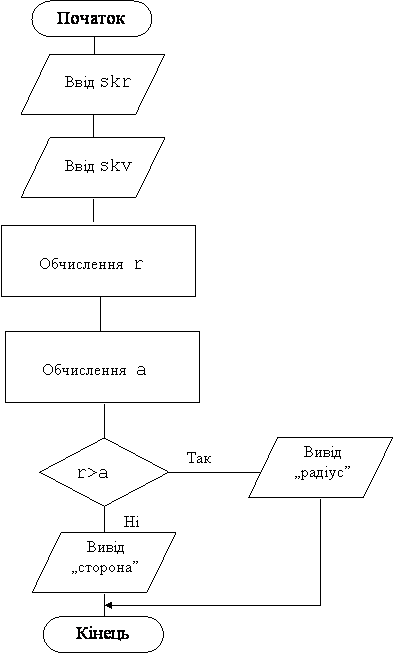

.
Назад
Вперед
Зміст
Задачі з повним умовним оператором з простою умовою
Приклад 1
Відомі площі кола та квадрату. Складіть програму, яка визначає, що більше, радіус кола чи сторона квадрату?
Дано: площа кола та площа квадрату
Знайти: радіус кола, сторону квадрату та порівняти
Змінні:
Вхіднi:
- skr– площа кола
- skv– площа квадрату
Вихідні:
- r – радіус кола
- a – сторона квадрату
Площі кола та квадрату мають дійсний тип. Для обчислення радіусу буде використатися функція Pi, що має дійсний тип, тому типи всіх змінних будуть дійсними.
Алгоритм
-
Ввід skr– площа кола та skv– площа квадрату. Перед вводом виводиться пояснення, що саме потрібно вводити;
-
Обчислення значення радіусу r з формули skr= pi*r2. Для обчислення використовується функція pi.
-
Обчислення значення сторони a з формули skv= a2.
-
Порівняння r і a та вивід слова 'радіус', якщо r>a і слова 'сторона' у протилежному випадку.
Блок-схема програми

Программа
Var skr,skv,a,r:real;
begin
write('skr= ');read(skr);
write('skv= ');read(skv);
r:=sqrt(skr/pi); a:=sqrt(skv);
if r>a then writeln('радіус')
else writeln('сторона');
end.
|
Результат роботи програми
| Ввід | Відповідь |
|---|
| 100 50 | skr= 100
skv= 50
сторона |
| 100 25 | skr= 100
skv= 25
радіус |
Приклад 2
Дано ціле трьохзначне число. Визначте, чи кратно воно добутку своїх цифр.
Дано: ціле трьохзначне число
Знайти: добуток його цифр та перевірити, чи кратно введене число обчисленому добутку його цифр
Змінні:
Вхіднi:
Вихідні:
Проміжні:
- c1– перша цифра
- с2 – друга цифра
- с3 – остання цифра
Операції цілочисельного ділення використовуються тільки для цілих чисел, тому всі вхідні , вихідні та проміжні дані цілого типу.
Алгоритм
- Ввід числа x.
- Обчислення c1,c2,c3 цифр числа n.
- Обчислення значення p.
-
Перевірка, якщо введене число x кратно обчисленому значенню p, то надрукувати'yes', у протилежному випадку надрукувати'no'.
Программа
Var x,c1,c2,c3,p:integer;
Begin
read(x);
c1:=x div 100;
c2:=x div 10 mod 10;
c3:=x mod 10;
p:=c1*c2*c3;
if x mod p =0 then writeln('yes') else writeln('no');
end.
|
Результат роботи програми
| Ввід | Відповідь |
|---|
| 112 | yes |
| 122 | no |
Варіанти задач
- Дано два різних дійсних числа. Знайдіть найбільше.
- Дано ціле число. Визначте, чи воно парне.
- Дано два цілих числа A та B. Визначте, чи є число B дільником числа A.
- Дано ціле число. Визначте, чи закінчується воно цифрою 7.
- Дано ціле трьохзначне число. Визначте, чи однакові його перша та остання цифри.
- Дано ціле трьохзначне число. Визначте, чи кратна п’яти сума його цифр.
- Дано чотирьохзначне число. Визначте, чи дорівнює сума двох перших його цифр сумі двох його останніх цифр.
- Дано ціле трьохзначне число, яке складається з неоднакових цифр. Визначте, яка з його цифр більша: перша чи друга.
- З’ясувати, чи є парним числом сума чисел a та b.
- Дани радіус кола та сторона квадрата. У якій фігури площа більша (випадок збігу не розглядати)?
- Відомі площі кола та квадрата. Визначте, чи вміститься круг у квадраті.
Пояснення: порівняти радіус кола та половину сторони квадрата.
- Дано (x,y) координати точки. З’ясуйте, чи належить ця точка колу з центром у початку координат та радіусом R.
Пояснення: Формула кола з центром у початку координат x2+y2=R2
- Дано ціле трьохзначне число. Чи є це число паліндромом (перевертишем), тобто числом, яке читається однаково зліва направо та справа наліво.
- Дано (x,y) координати клітинки шахової дошки. З’ясуйте колір клітинки. (Клітинка (1;1) – чорна).
- З’ясуйте, чи може шаховий слон за один хід попасти з клітинки з координатами (x1,y1) у клітинку з координатами (x2,y2).
- Перші Олімпійські ігри були в 1896 році та проводяться через кожні чотири роки. Іграм призначається номер по порядку. Дано n – рік. Визначте номер Олімпійських ігор які проводились у цьому році. Якщо рік не олімпійський, то номер ігор вважайте рівним 0.
Назад
Вперед
Зміст